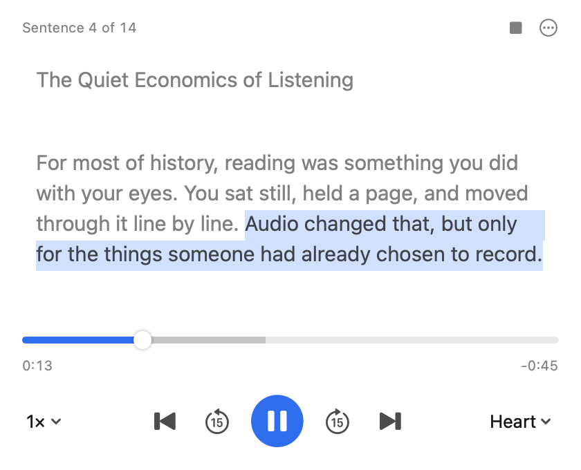

Select any text.
Hear it read aloud.
Read Aloud is a free Mac app that reads whatever you select, in any app, with a natural-sounding voice. It runs entirely on your Mac. There's no account, no subscription, and nothing is sent online.
Download for Mac
Reading happens in the background. Click the bars in the menu bar to see the text and scrub through it.
Built for listening, not fiddling
One shortcut, and it starts talking within about a second.
Natural voices
Fourteen American and British voices from Kokoro, an open speech model that sounds far closer to a person than the built-in Mac voices.
Private and free
The voice runs on your Mac. Your text never leaves it, it works offline, and you can listen for hours without paying per word.
Scrub like a podcast
Drag the timeline, skip 15 seconds, jump to any sentence by clicking it, and listen at up to 2.5× speed without the chipmunk effect.
How it works
It works in Safari, Chrome, Mail, Slack, Notes, PDFs, and nearly anywhere else you can select text.
- Select some textAn article, an email thread, a long Slack message, a research paper.
- Press ⌃ ⌥ RThat's Control, Option and R. It starts reading right away. Press it again to pause or resume.
- Click the bars in the menu bar when you want moreSee the text with the current sentence highlighted, scrub, change the voice or speed, or stop.
Install
About a minute, start to finish.
- Download and open ReadAloud.dmgDownload it here, then drag Read Aloud into your Applications folder.
- Open Read Aloud from ApplicationsThe bars appear in your menu bar and a short welcome opens beneath them.
- Allow Accessibility accessClick Open Accessibility Settings and switch on Read Aloud. This is what lets it see the text you select. It doesn't record your screen or keystrokes.
Controls
The player responds to these while it's open.
| Read the selected text | ⌃ ⌥ R |
| Pause or resume | The shortcut again, or Space |
| Back or forward 15 seconds | ← → |
| Previous or next sentence | ⇧ ← ⇧ →, or click a sentence |
| Voice, speed, shortcut, quit | Right-click the menu bar icon |
Questions
The short answers.
Is it really free?
Yes. The voice model runs on your own Mac, so there's no server to pay for and no usage limit. Read Aloud is open source.
Is anything I select sent to the internet?
No. Text is turned into speech on your Mac and is never uploaded. The app works with Wi-Fi switched off.
Which Macs does it run on?
Macs with Apple Silicon (M1 or newer) running macOS 14 Sonoma or later. Older Intel Macs aren't supported because the voice would be too slow.
Why does it need Accessibility access?
macOS only lets apps read another app's selected text through Accessibility. Read Aloud uses it to grab your selection when you press the shortcut, and for nothing else.
Can I change the shortcut?
Yes. Right-click the menu bar icon and choose Shortcut. You can pick from ⌃⌥R, ⌥Esc, ⌃⌥Space and ⇧⌘1.
Does it start when I log in?
Yes, so the shortcut is always ready. You can turn that off by right-clicking the menu bar icon and unchecking Open at Login.
How do I uninstall it?
Right-click the menu bar icon, choose Quit, then drag Read Aloud from Applications to the Trash.